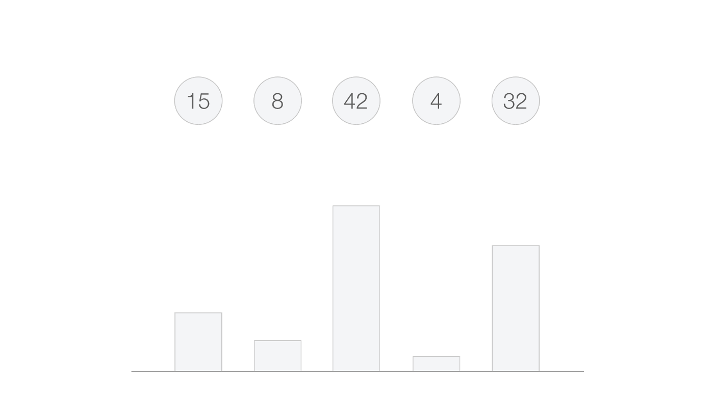
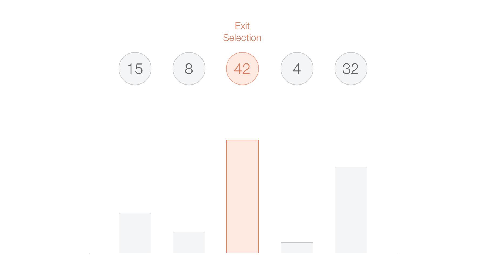
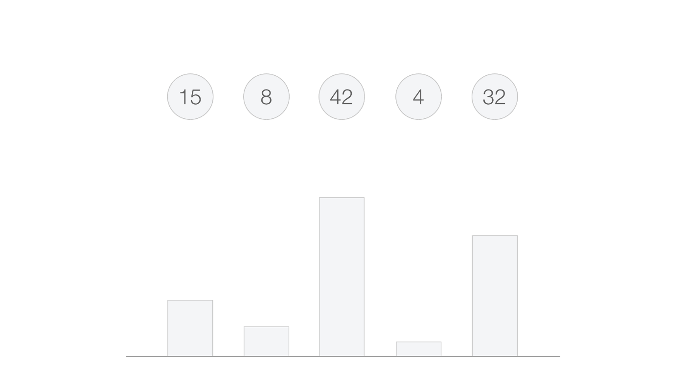
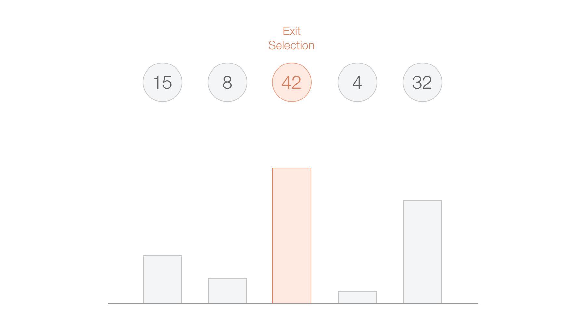
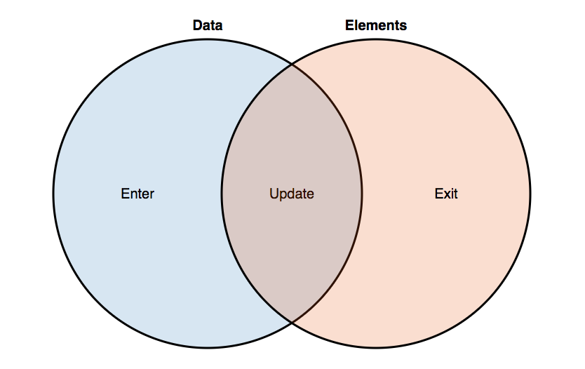
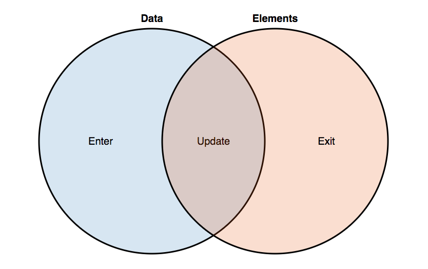
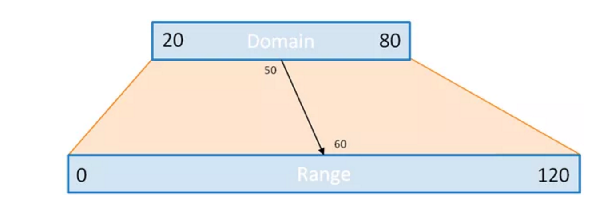

D3 Show Reel from Mike Bostock, code source.
Principe de base connecter données et éléments du DOM.


 



 

Illustrations de Christian Behrens
Quelques références:
Principe de base connecter données et éléments du DOM.
Illustration de Jerome Cuckier
Quelques références: